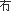

詹宪慈撰。全书共42卷，1405条。本书于二十世纪二十年代已完稿，但由于种种原因，直到1995年才由香港中文大学出版社出版。书前有作者于民国十三年（1924年）的自序。本书用作者手稿直接影印出版，并且根据内文编制目录，以便翻阅。除每条顺次编号外，还给每字加注国际音标。注音尽量依据作者原意处理。本书目的在于考证广州话口语本字，所以注音一律以口语音（以别于读书音）为根据。广州音拼写方案大体依照黄锡凌《粤音韵汇》（重排本）所用的国际音标。
本书是考证广州话口语词的权威之作。作者有感于记录广州话往往难以下笔，便以字的意义去求本字。作者在为杨铁夫《铁城土语语原考》一书作序时指出，广州话词语有很多不知本字，主要原因有三种：第一是"多以音变而失其本字"，如"饮胜"应为"饮罄"；第二是"古已声误而今犹沿用之"，如""应作"无"；第三是"因叶音而忘其本字"，如量词"旧"应作"具"。
作者每一论说，必根据训诂及字书、韵书，例如《尔雅》、《释名》、《广雅》等字书爬梳古义，条理精密。此书是研究广州话本字的楷模。
此外，由于书成于20世纪初，当中保留了不少当时通行的广州词语，资料实属珍贵。如当初称作"初不律"，最后称作"尾 "，刚才称为"才迟"等。这些词现在已用其他词代替。 "，刚才称为"才迟"等。这些词现在已用其他词代替。
|